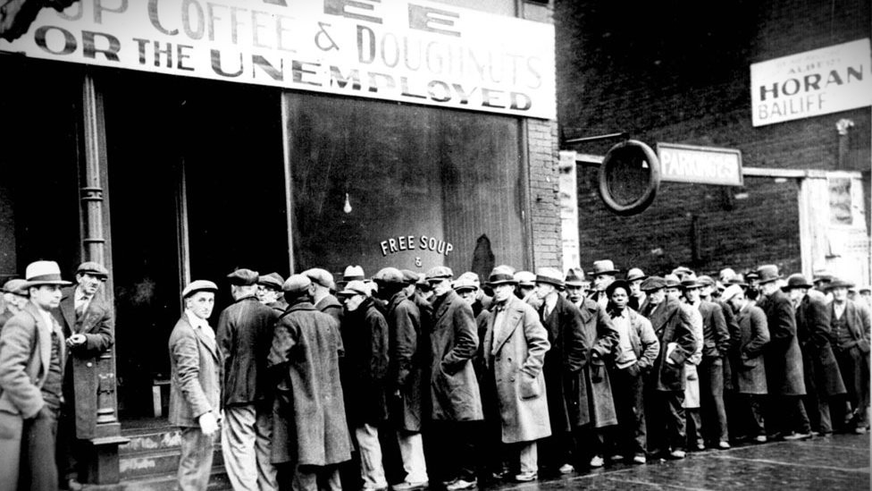
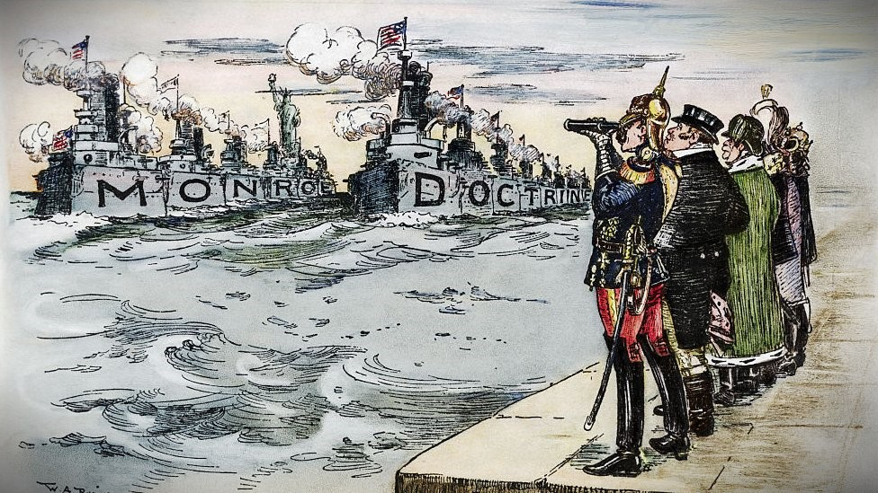

Causas de la Primera Guerra Mundial
Estas son las causas más importantes de la Gran Guerra:
Causa 1: Crisis Mundial
En 1873, Europa experimentaba una de las peores crisis económicas de su historia. Los beneficios de las industrias disminuyeron, el valor de las acciones cayó, muchas empresas quebraron, numerosos bancos cerraron y se produjeron despidos masivos. Las condiciones de vida de los trabajadores se volvieron más difíciles, afectando a países como Francia, Alemania, Inglaterra y muchos otros. Esta crisis obligó a estos países a tomar diversas medidas para superarla.
Causa 2: Imperialismo
El imperialismo también contribuyó a las tensiones en Europa. Las potencias coloniales buscaban expandir sus imperios y controlar nuevos territorios, lo que llevó a conflictos y competencia por recursos y colonias en otras partes del mundo.
Causa 3: Estallido de la Guerra
La crisis llevó a que en la época de 1914, el continente europeo, al estar dividido, se formaron dos imperios rivales: la Triple Alianza y la Triple Entente. La intención de Alemania de ocupar la zona de los bolcheviques fue lo que provocó el asesinato del archiduque Francisco Fernando en Sarajevo, Bosnia, el 28 de junio de 1914, haciendo estallar el polvorín y provocando la guerra que duró 4 años."